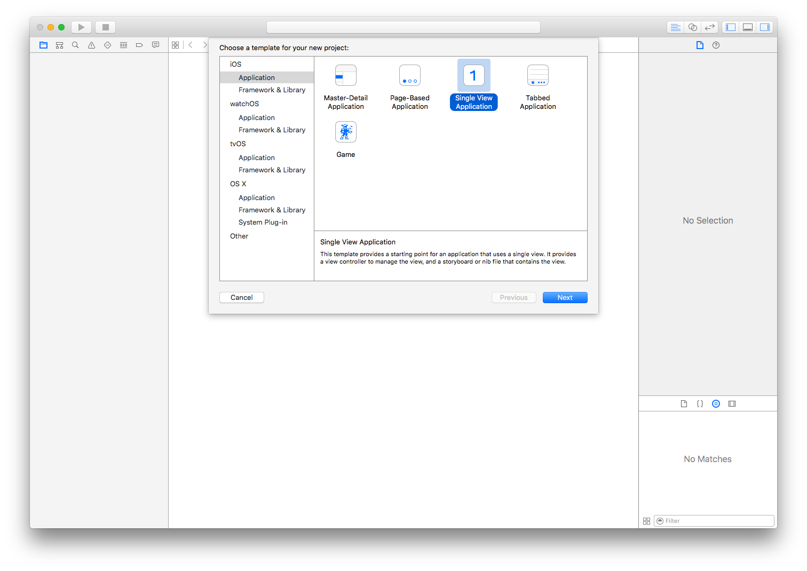
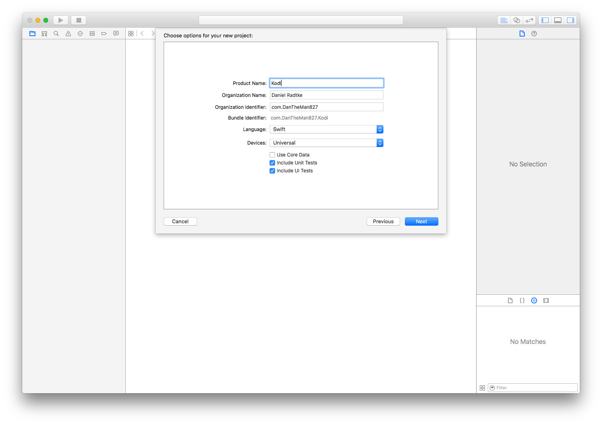
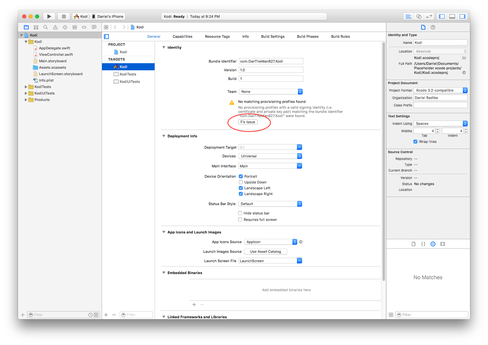
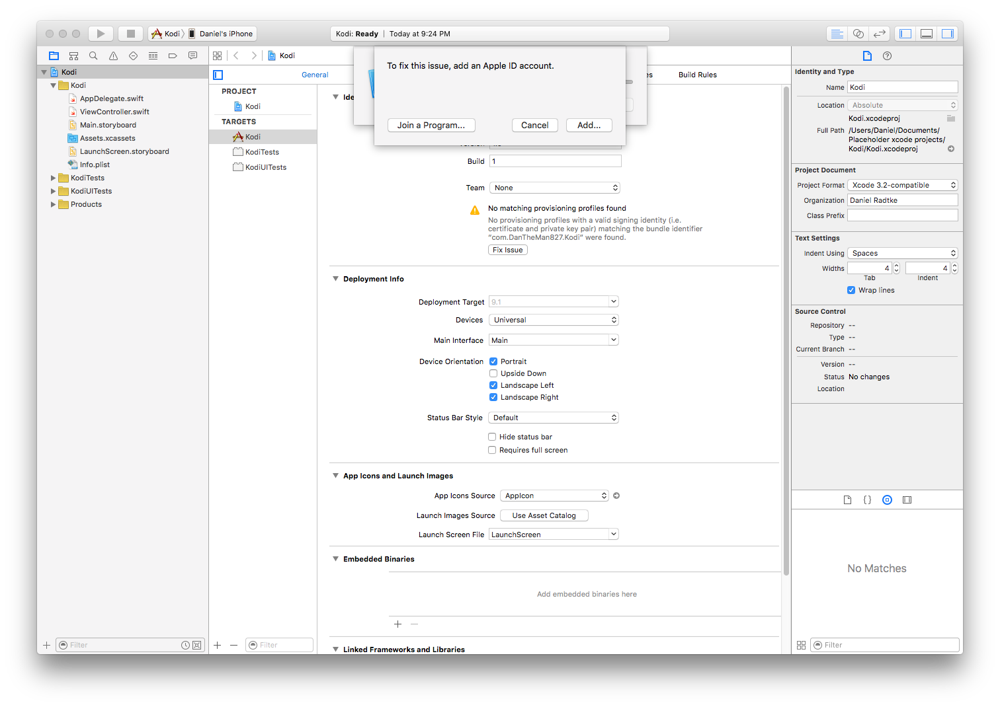
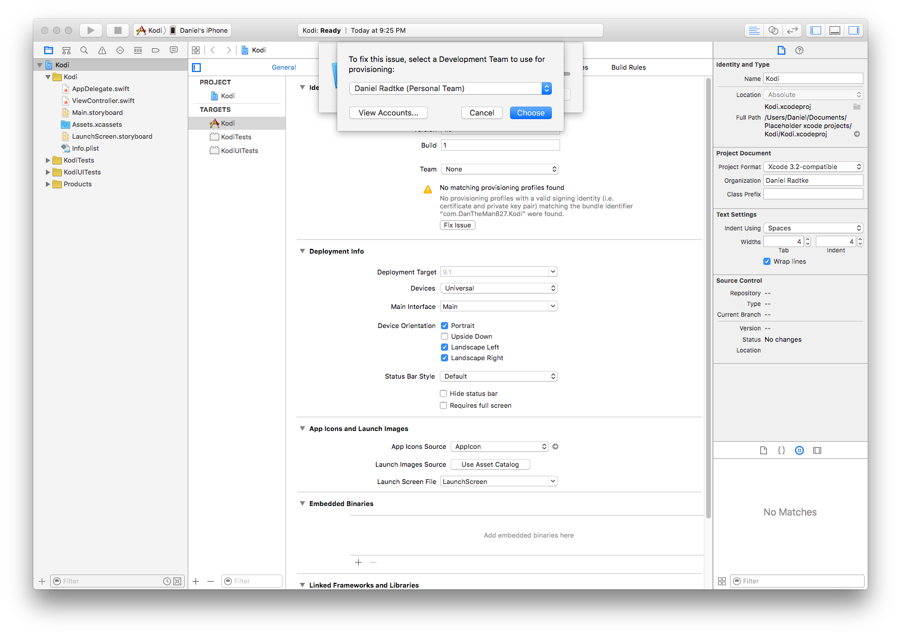
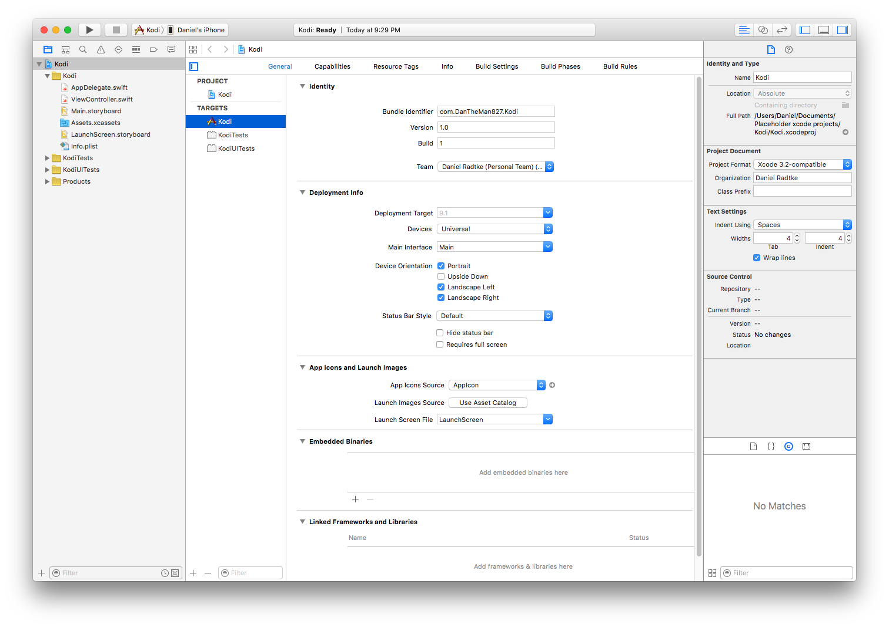
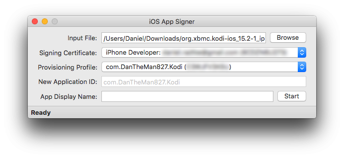
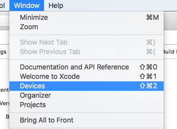
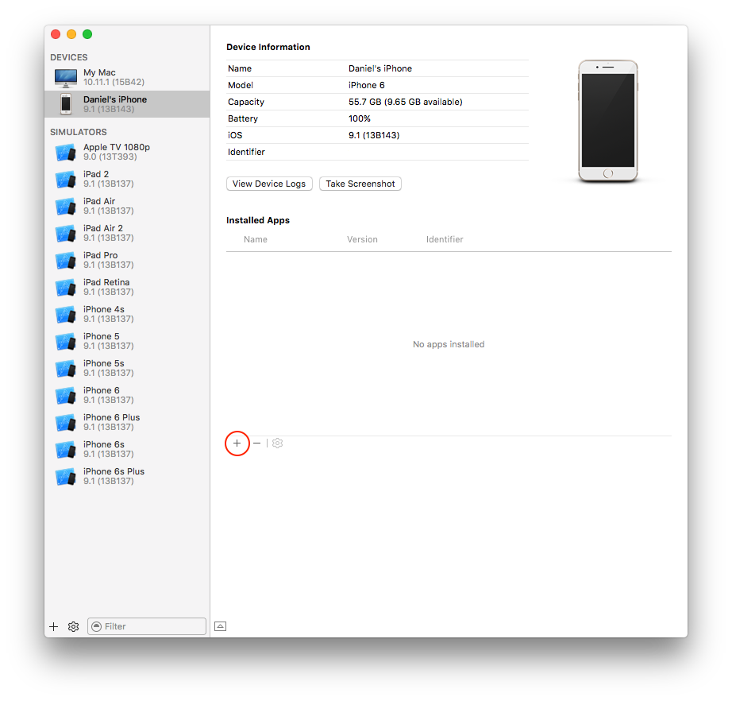

iOS App Signer
This is an app for OS X that can (re)sign apps and bundle them into ipa files that are ready to be installed on an iOS device.
Supported input types are: ipa, deb, app, xcarchive
Videos
How to install Kodi on iOS without jailbreak
How to install Kodi on the Apple TV 4
Prerequisites
To sign the application, you're going to need Mac OS X 10.9 or newer and Xcode 7 or newer.
In order to install the signed application to your device you're going to need a cable.
For the Apple TV 4, you'll need either a USB-A to USB-C cable or a USB-C to USB-C cable.
For iOS devices, you'll either need a lightning cable or a cable with the 30-pin dock connector.
Usage
If you have a paid developer account or a signing certificate and provisioning profile, you can skip to step 7 and just use your signing certificate and the profile.
-
Open Xcode and create a new iOS or tvOS application depending on your device type

-
Type in a name and identifier (choose something unique, something like com.yourname.kodi)

-
Xcode will complain about the provisioning profile, click fix issue

-
Xcode may have you sign into an Apple ID, click Add...

-
Then you'll see something like this, select your ID and click Choose

If you have additional devices
- Plug in the device
- Go to the Product Menu
- Under Destination, select your device
- Repeat from step 3
-
Xcode should no longer be complaining

-
Open App Signer, select the deb, your signing certificate, and the provisioning profile

-
Click start and select an output filename
-
To install the app onto your device go back into Xcode, select the Window menu and then click devices

Then click the + and select the file generated by iOS App Signer

Thanks To
maciekish / iReSign: The basic process was gleaned from the source code of this project.